Web3 community platform
Karma
Build and Maintain Better Communities
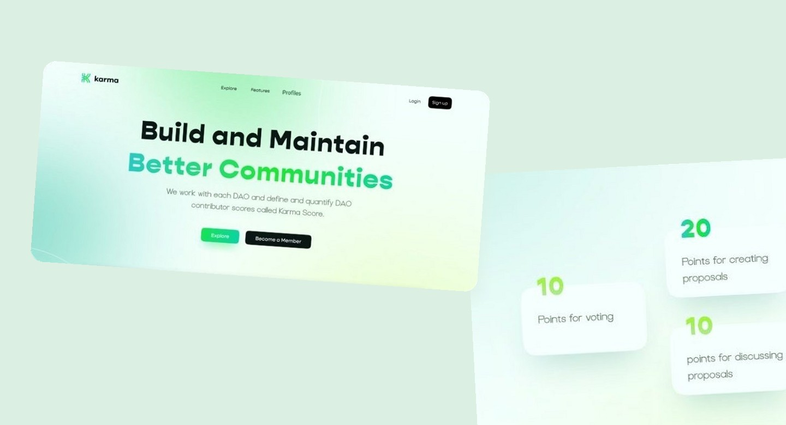
Overview
Karma is a platform that helps Decentralized Autonomous Organizations (DAOs) build and maintain better communities by valuing and rewarding their members contributions. With a scoring system called Karma Score, the platform integrates data from multiple DAO sources to provide visibility, compensation, and recognition for active contributors.
Problem
- DAO member contributions through various platforms are scattered and difficult to track thoroughly.
- The lack of a standardized system for counting and recognizing contributions means that many important participations are not well-documented
- Active members are often invisible because their contributions are not recorded on-chain.
- Lack of recognition makes contributors feel unappreciated, so they lose motivation and leave the community.
- Difficulty identifying and developing talented members as there is no data to show who is truly active and impactful.
Solution
- Integration of DAO data from platforms like Snapshot and on chain voting to showcase member contributions clearly.
- A scoring system that tracks real participation such as proposals, voting, and discussions to measure each member's impact.
- User profiles that highlight individual contributions and help identify top contributors.
- Fair rewards for members who consistently support DAO growth and governance.
- Reputation that carries across multiple DAOs, enabling broader recognition for contributors.
My role
As the UI/UX Designer for this project, I was responsible for transforming complex DAO and blockchain related concepts into a user friendly and visually clear experience. I conducted UX research to better understand the needs of DAO contributors and community managers, which helped me design user journey and interfaces that simplify how contributions are tracked, displayed, and rewarded. I created high fidelity design and mockups for key pages such as the homepage and contributor profile, ensuring the interface was both engaging, and easy to navigate
Process
1. Discovery At this step, I started by understanding DAOs and how Karma works in the context of Web3 communities. I conducted desk research on popular DAO platforms such as Snapshot, Tally, and Twitter Community, and analyzed how member contributions are typically tracked and rewarded. I also studied competitors and similar tools to understand industry standards and look for opportunities for improvement. These findings helped build an initial understanding of user pain points, such as the lack of transparency, rewards, and visibility for DAO contributors. 2. Ideation In the ideation step, I focused on designing an interface that displays DAO contributions in a comprehensive and easy to understand way. The top priority was to display contribution metrics per DAO so that users can see how they are performing in each community, while considering explorative features and filtering so that users can access the information that is most relevant to them. I also developed a simple user journey to map out the flow of users as they browse through their contributions in various DAOs. 3. Design Process Once the initial ideas were validated internally, 1 proceeded to create a high fidelity UI design in Figma. I chose a modern, clean, and professional visual style to reflect the blockchain world while remaining user friendly. I designed pages such as the homepage and feature section with accessibility and visual consistency in mind. 4. Usability Testing To test the feasibility and ease of use of the design, I developed simple scenarios and tasks as the basis for usability testing. These tests were designed to validate whether users could easily understand the information structure, navigate the platform, and capture value from the Karma Score system.
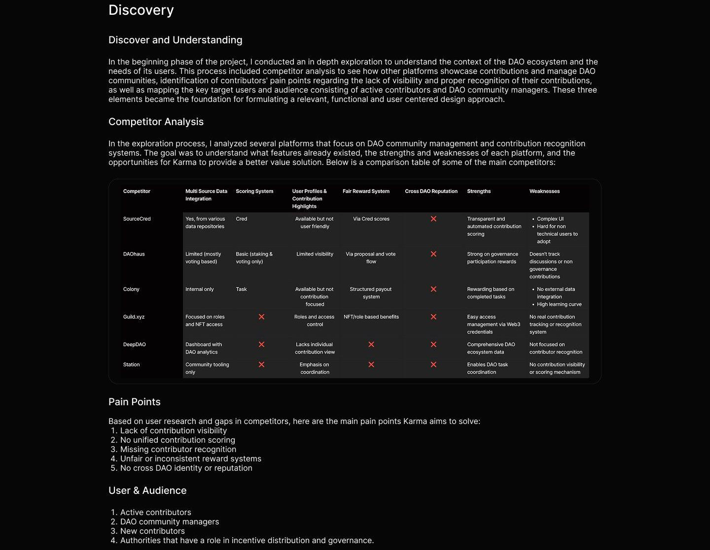
Ideation
User Journey
This section illustrates the typical experience of a content creator using the app, from finding potential collaborators to completing the journey and sharing content. Based on the pain points identified through competitor analysis, this journey highlights real user frustrations and expectations, helping to shape features that prioritize safety, trust, and seamless collaboration.
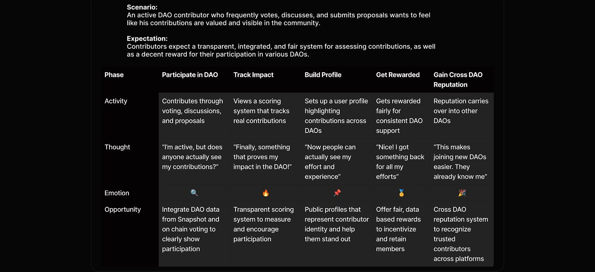
Design system
After identifying the contributors' lack of visibility and recognition across decentralized communities, I focused on crafting core features that bring transparency, credibility, and rewards to their efforts. The goal was to design an experience that is intuitive, trustworthy, and empowers users to track and showcase their impact across DAOs.
Design System To ensure visual harmony and streamline the design workflow, I developed a design system that defines color schemes, typography, and component behavior. This foundation supports consistency across all interfaces while aligning with the decentralized and data based nature of the platform.
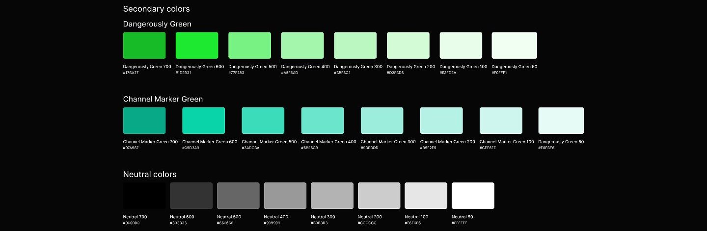
Typography
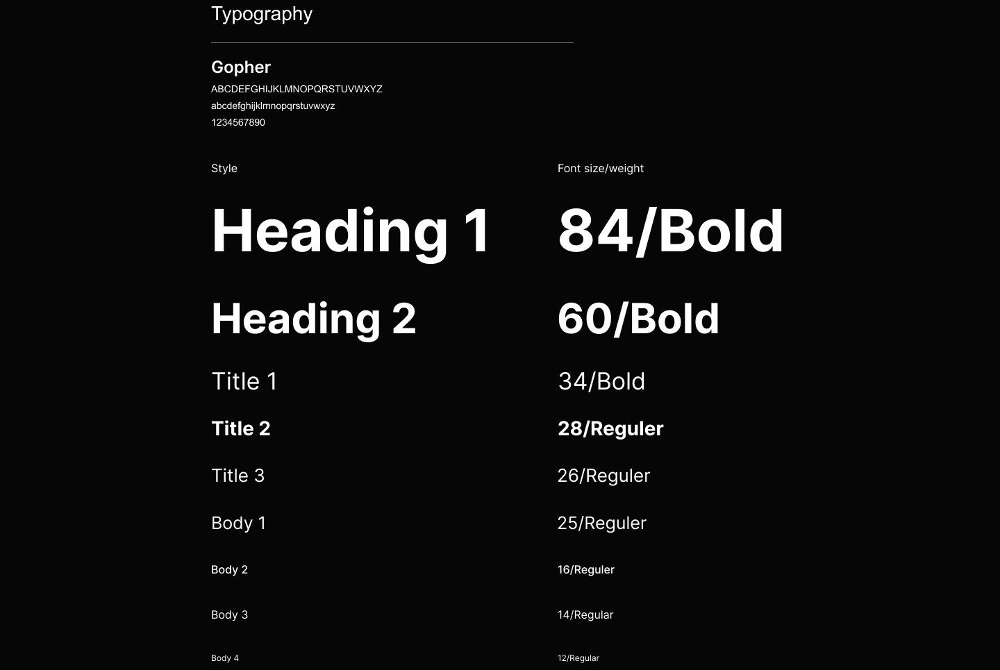
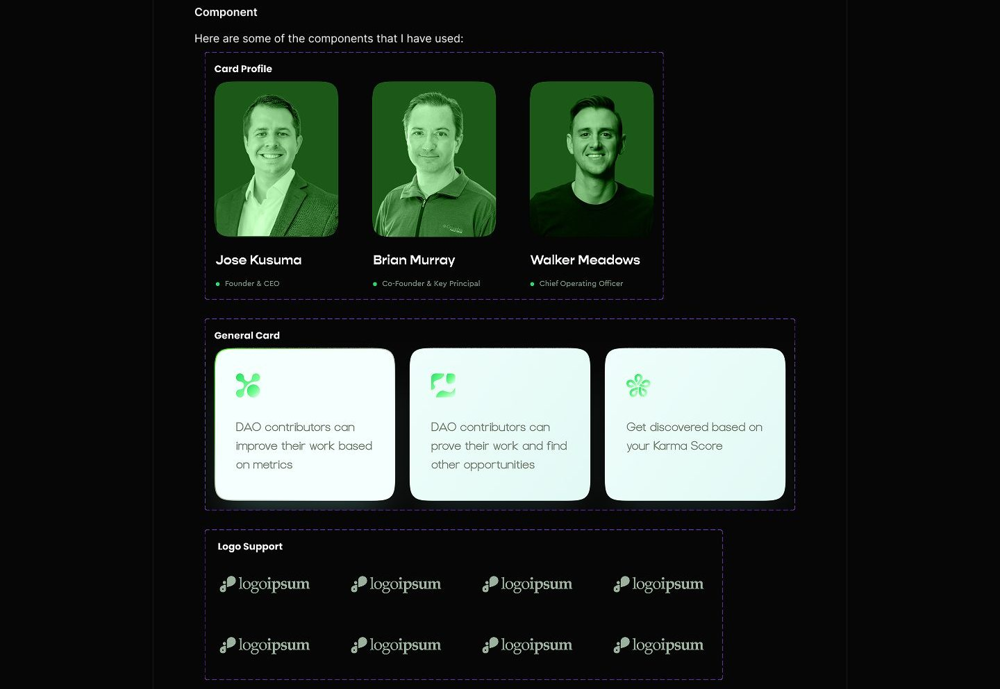
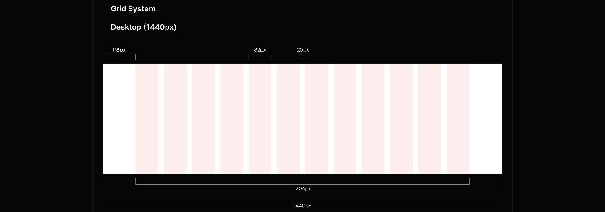
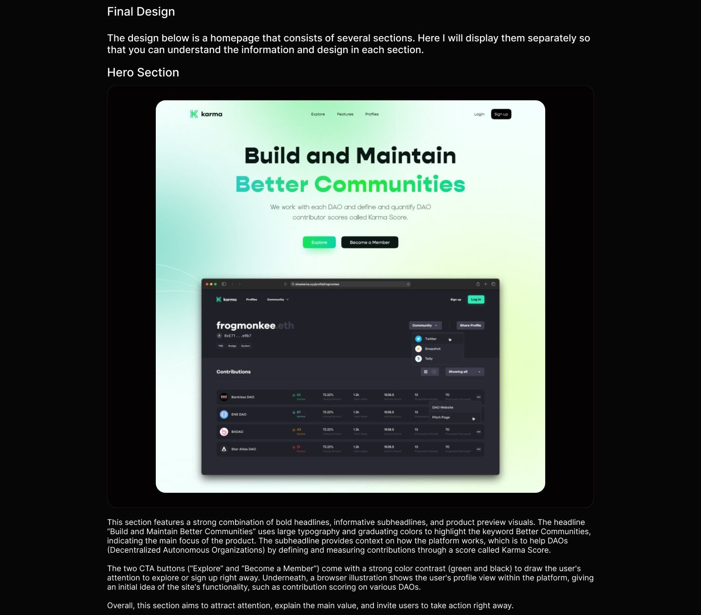
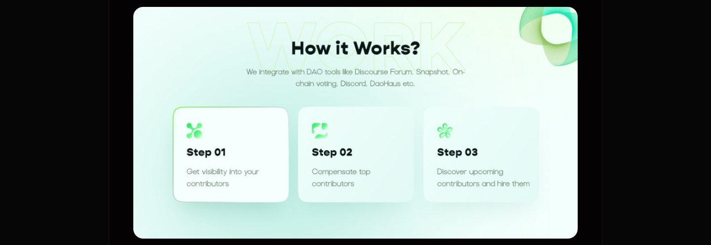
This section is designed with a clean, bright and systematic visual style, featuring three main steps in the form of horizontal cards. Each step is given a distinctive green icon that represents a different stage, accompanied by a short title and a concise description that is easy to understand. Step 01 shows that the platform helps users to gain visibility to their contributors. Step 02 emphasizes the importance of compensating the best contributors, indicating a contribution based reward system. Finally, Step 03 invites users to find potential contributors and recruit them. This section serves as a simplification of the complex process that the product may have, and conveys it in the form of a step-by- step narrative for easy understanding by the audience, especially for new users who want to know the benefits and mechanics of the platform quickly.
Score?
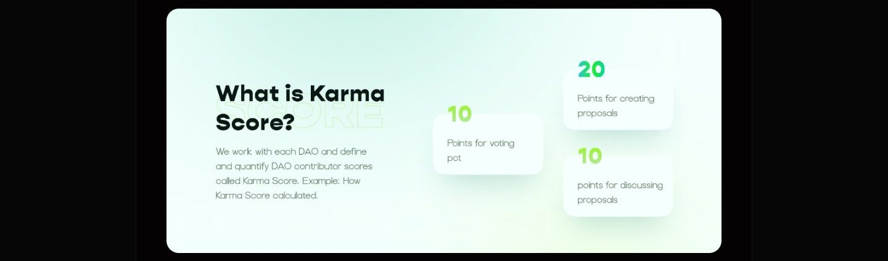
This section is designed to visually and concisely explain how the contribution score called Karma Score is calculated. The design is divided into two parts: the left side presents a text explanation of the Karma Score definition, while the right side displays the contribution points in the form of large, striking green numbers. Each point is packaged in a card with a white background and rounded corners, highlighting each activity that contributes to the score, such as voting, making proposals, and discussing. Its function is to educate users, especially DAO contributors on how their activities are assessed and rewarded in the system. This creates transparency and encourages more active engagement, as users can see first-hand how their actions impact their reputation or score within the DAO community. This section also strengthens users' trust in the system used by the platform.
Karma Team
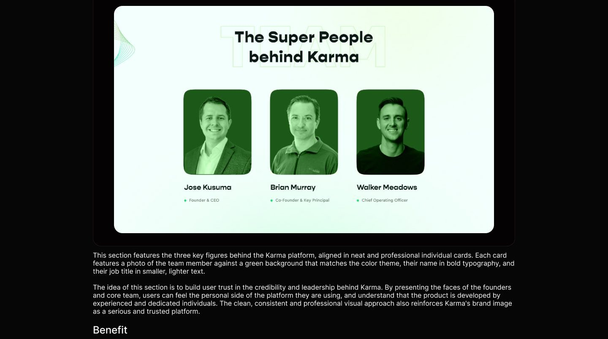
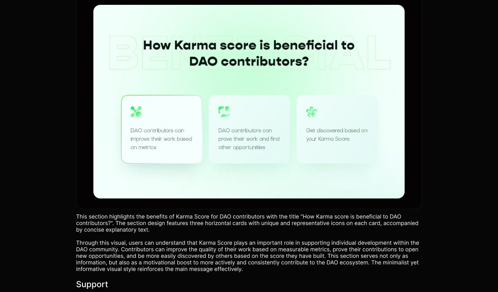
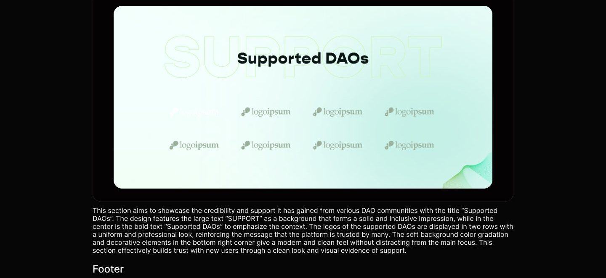
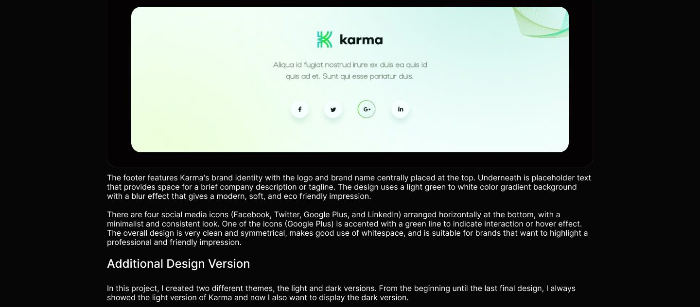
Usability testing
To evaluate the effectiveness and usability of Karma, I conducted usability testing sessions by setting up realistic scenarios with task based activities. The main objective of the testing was to understand how users interact with the application, identify pain points, and validate whether the designed features are truly aligned with the needs and expectations of DAO community users. Participants were given the following scenario to complete: 1. You are a member of multiple DAOs and want to check your Karma score and activity in each DAO. How do you check it? 2. You want to explore more information about the DAOs you contribute to. What should you do to get that information? 3. You want to share your contribution profile with your network. How to share it? 4. You are only interested in your Snapshot contributions. What should you do? These tasks are designed to represent actual user goals, from getting to know the Karma website, navigating content, exploring the DAO, to sharing contribution data.
Reflection If I had additional time, I would: 1. Continue collecting in-depth user feedback Focus on finding small challenges that may have been missed during previous testing, especially things that are not immediately apparent but impact user comfort. 2. Test prototypes in real-world scenarios To ensure navigation feels natural and find areas that cause confusion or obstacles when used in real context. 3. Perform design iterations based on test results Refine the appearance and interactions to make them more intuitive, enjoyable, and in line with user expectations and needs.
Full case study
The complete annotated board lives in Figma, with every flow, wireframe, and screen.